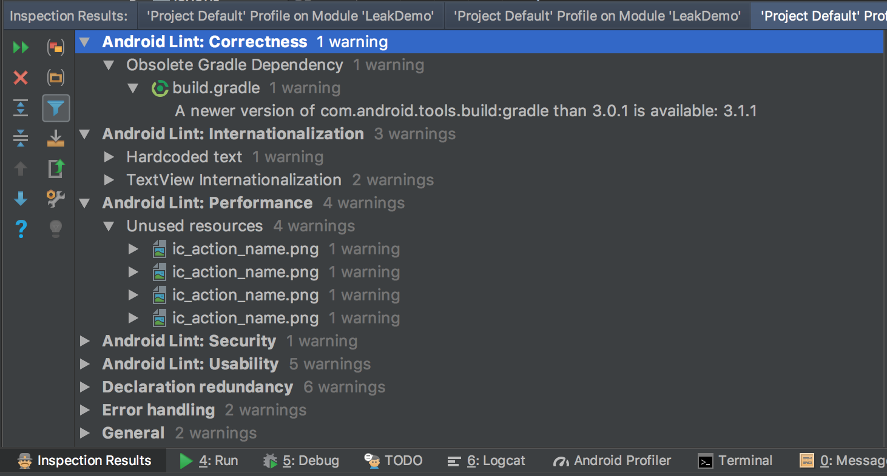

Lint工具
这里的Lint是指Android提供的Lint检测工具，可以通过gradle任务执行，也可以直接用GUI的面板操作。
Lint主要是用于检测项目源文件的，包括代码和资源在内，下面是摘录与官网的一段说明：
Lint 工具可检查您的 Android 项目源文件是否包含潜在错误，以及在正确性、安全性、性能、易用性、便利性和国际化方面是否需要优化改进
Lint 工作流程

- 应用源文件
源文件包含组成 Android 项目的文件，包括 Java 和 XML 文件、图标和 ProGuard 配置文件等。
- lint.xml 文件
此配置文件可用于指定您希望排除的任何 Lint 检查以及自定义问题严重级别。
- Lint 工具
可以从命令行或在 Android Studio 中对 Android 项目运行此静态代码扫描工具（请参阅手动运行检查）。Lint 工具检查可能影响 Android 应用质量和性能的代码结构问题。强烈建议您先纠正 Lint 检测到的任何错误再发布应用。
- Lint 检查结果
可以在控制台或 Android Studio 的 Inspection Results 窗口中查看 Lint 检查结果。
Lint使用
可以通过gradle执行，也可以通过在 Android Studio 中配置 Lint。
在您使用 Android Studio 时，内置的 Lint 工具会检查您的代码。您可以通过以下两种方式查看警告和错误：
代码编辑器中的弹出文本。Lint 发现问题后，会用黄色突出显示有问题的代码，而对于更严重的问题，则会在代码下面添加红色下划线。 在 Lint 的 Inspection Results 窗口中，点击 Analyze > Inspect Code。请参阅手动运行检查。
无论是哪种方式，我们都可以配置检查项。
在 lint.xml 文件中指定 Lint 检查首选项。如果您是手动创建此文件，请将其置于 Android 项目的根目录。
lint.xml 文件由封闭的
<?xml version="1.0" encoding="UTF-8"?>
<lint>
<!-- Disable the given check in this project -->
<issue id="IconMissingDensityFolder" severity="ignore" />
<!-- Ignore the ObsoleteLayoutParam issue in the specified files -->
<issue id="ObsoleteLayoutParam">
<ignore path="res/layout/activation.xml" />
<ignore path="res/layout-xlarge/activation.xml" />
</issue>
<!-- Ignore the UselessLeaf issue in the specified file -->
<issue id="UselessLeaf">
<ignore path="res/layout/main.xml" />
</issue>
<!-- Change the severity of hardcoded strings to "error" -->
<issue id="HardcodedText" severity="error" />
</lint>
检查结果
通过Android Studio的Code Inspect检查后，在底部面板可以查看具体结果。
